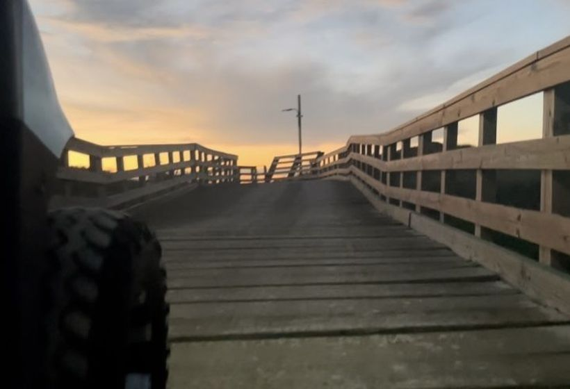
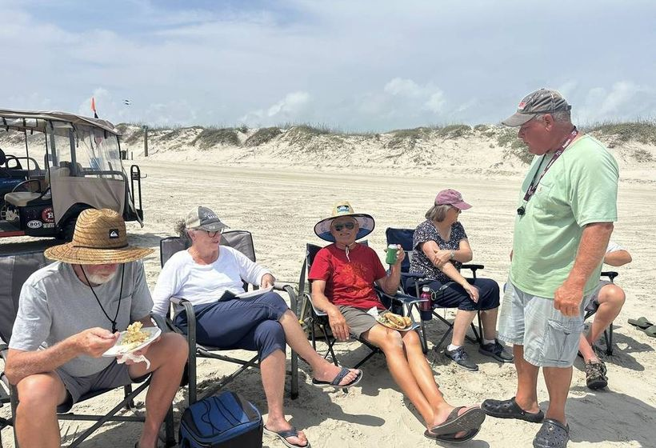
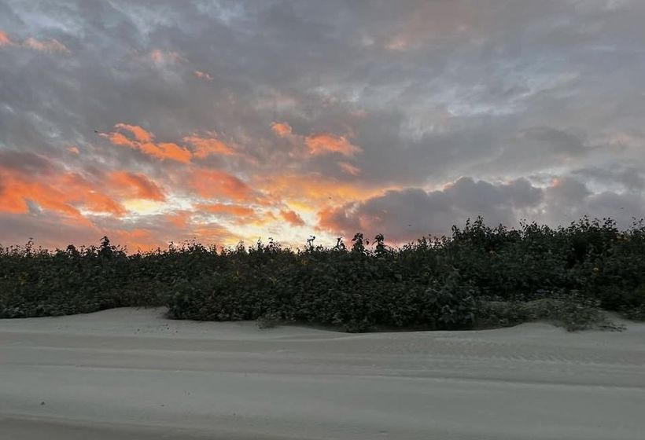
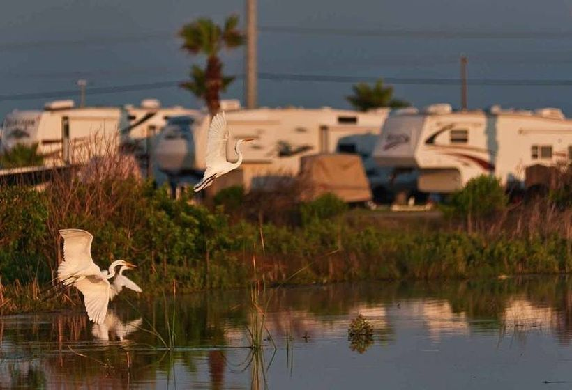
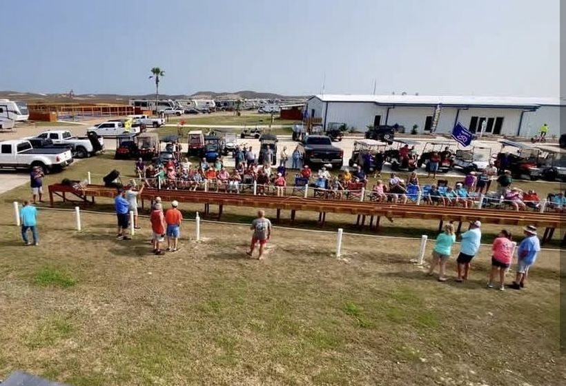
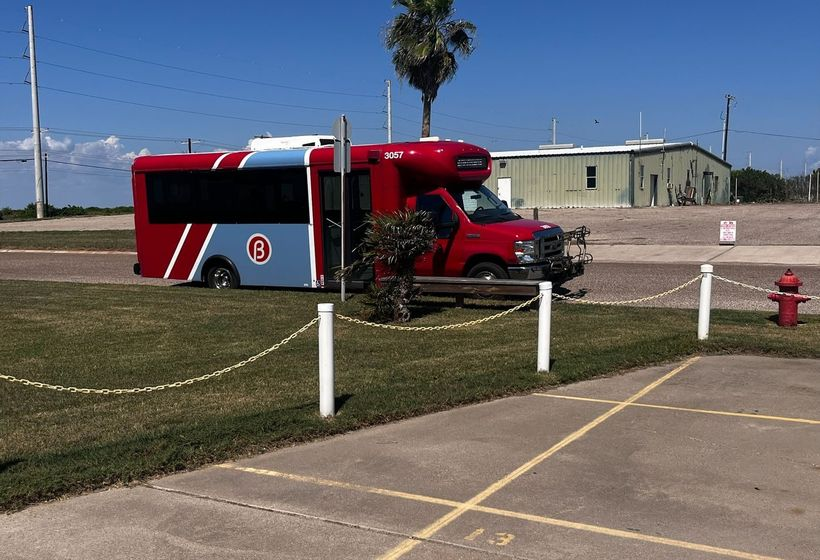

On the BeachOur Own Boardwalk
The boardwalk crosses the dunes straight from the park onto the sand — no driving, no parking, no beach pass to buy.
Beaches, boats and the best of town — all minutes from your site
Pioneer sits two miles from town and a boardwalk away from the Gulf, so most days start without anybody getting in a car. Here is what that looks like.

On the BeachThe boardwalk crosses the dunes straight from the park onto the sand — no driving, no parking, no beach pass to buy.

On the BeachRent a golf cart at the office and run the chairs, the cooler and the whole family down to the water in one trip.

Every EveningGuests drift out to the boardwalk most nights. It is the quietest, best seat on this stretch of the coast.

In the ParkEgrets, herons and spoonbills work the pond at the edge of the park. Port Aransas sits on the Great Texas Coastal Birding Trail.

Event WeekendsOur own sandbelt track runs on event weekends — the crowd turns out along the rail and it is as good to watch as it is to race.

Getting AroundThe resort shuttle runs into Port Aransas, so the truck can stay hooked up and nobody has to look for parking downtown.
Everything the island is known for stays within easy reach — and the ferry, the harbour and downtown are all a few minutes out the gate.
Deep-sea and bay trips for snapper, redfish and trout.
Port A HarborWatch wild dolphins play in the ship channel.
~10 minA classic ride across the ship channel, running around the clock.
~10 minWWII aircraft carrier museum across the water in Corpus Christi.
~30 minSea life exhibits, rescue centre and dolphin shows.
~30 min18-hole championship course right on the coast.
~15 minPaddle the Lighthouse Lakes trails at your own pace.
~15 minBoardwalks and blinds on the Great Texas Coastal Birding Trail.
NearbyA Port A institution — famous for Belt Sander Racing since 2005.
~2 minShops, galleries, live music and fresh Gulf seafood.
~5 minBook direct on CampSpot or call our team — sites and cottages fill up fast in season.